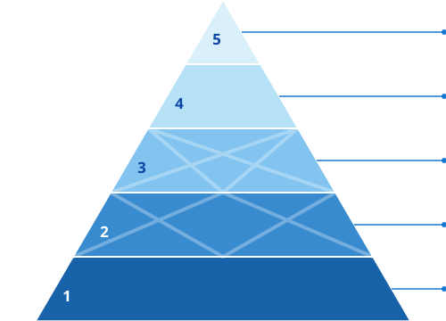

Redes corporativas e locais
Conectam computadores, servidores e dispositivos móveis em escritórios e prédios. Priorizam acesso a serviços, compartilhamento de dados e mobilidade.
Ver Ethernet, Wi-Fi e fibra óptica →Do dia a dia à indústria
Quando você envia uma mensagem ou um sensor mede a temperatura, os dados percorrem uma rede. Vamos entender esse caminho.
Por onde começar
Conectam computadores, servidores e dispositivos móveis em escritórios e prédios. Priorizam acesso a serviços, compartilhamento de dados e mobilidade.
Ver Ethernet, Wi-Fi e fibra óptica →Conectam controladores, sensores e equipamentos de produção. Precisam atender aos requisitos de tempo, disponibilidade e condições do ambiente.
Ver redes e protocolos industriais →O básico
O caminho por onde os dados passam: cabo de cobre, fibra óptica ou ondas de rádio.
Dispositivos como switches, roteadores, computadores, controladores e sensores.
Um conjunto de regras que define como os dispositivos enviam e recebem informações.
Na prática
Um computador, sensor ou controlador prepara uma informação, como uma mensagem ou uma medição.
O cabo, a fibra ou o rádio leva os dados. Switches e pontos de acesso ajudam a encaminhá-los.
As regras do protocolo ajudam os equipamentos a interpretar a informação e responder quando necessário.
Na prática, redes combinam vários equipamentos e tecnologias. Um escritório pode usar Wi-Fi para os celulares e cabos Ethernet para os computadores; uma fábrica pode conectar sensores a controladores e sistemas de supervisão.
Redes corporativas e industriais
A pirâmide organiza sistemas e redes usados para levar informações dos sensores até a gestão da empresa. Os exemplos são comuns, mas uma tecnologia pode conectar mais de um nível.

Gestão corporativa: ERP, planejamento e integração entre unidades.
Ethernet · Wi-Fi · fibra óptica · redes WAN
Gestão da planta: MES/PIMS acompanha produção, qualidade e recursos.
Ethernet industrial · Foundation Fieldbus HSE · MQTT
Supervisão: IHM, SCADA, alarmes, históricos e operação.
OPC UA · Modbus TCP
Controle: CLPs, CNCs e sistemas digitais de controle distribuído.
PROFINET · EtherNet/IP · EtherCAT · PROFIBUS DP · DeviceNet · CANopen · CC-Link · Modbus RTU
Campo: sensores e atuadores medem e atuam diretamente no processo.
IO-Link · AS-i · HART · WirelessHART · PROFIBUS PA · Foundation Fieldbus H1
Importante: os níveis são uma referência de organização, não uma regra rígida. Protocolos como OPC UA e Ethernet podem atravessar níveis; os exemplos não substituem a análise técnica de cada rede.
Veja os detalhes das redes industriais →Um exemplo de fábrica
Pense em um tanque aquecido: o sensor mede a temperatura, o CLP decide se liga o aquecedor e o operador acompanha tudo pela tela. Outros sistemas podem usar esses dados para registrar a produção e planejar.
Mede a temperatura e envia o valor ao controlador.
Compara a medição com o valor desejado e comanda o aquecedor, se necessário.
Uma tela mostra a temperatura e os alarmes para o operador.
O sistema acompanha dados da produção, como lotes e qualidade.
Informações consolidadas ajudam a empresa a planejar.
Este é um exemplo simplificado. Na prática, a integração e o caminho dos dados variam conforme a fábrica; nem toda medição chega diretamente ao ERP.